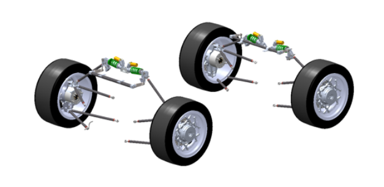

|
Cheng Han Yu I am a first-year MS student in MAE at UC San Diego, with a BS in Mechanical Engineering from NTHU. I have 4 years of experience in Formula Student, specializing in suspension design, vehicle dynamics, vibration analysis, and control. My main interests include automotive engineering, control systems, and robotics. |

|
Project Experience |


|
Autonomous Tower of Hanoi with a 4-DOF Robotic Arm National Tsing Hua University, 2024 (First Place Award) Built an autonomous Tower of Hanoi solver on a 4-DOF robotic arm using ROS and Python. A custom inverse-kinematics solver and time-parameterized, jerk-limited trajectory generator execute the optimal move sequence with collision/singularity checks, homing, and grasp interlocks for reliability. Motion-profile optimization reduced total solution time by ~50%, earning first place in the course final project. |


|
4WD EV Racecar Yaw-Moment–Based Torque-Vectoring Controller Design NTHURacing TH07, National Tsing Hua University, 2024 project page / video Developed a yaw-moment–based torque-vectoring controller for a 4WD electric racecar. Fused IMU yaw rate, steering angle, and wheel-speed signals; used a bicycle model with a tire model to compute the desired yaw moment and allocate wheel torques in real time. Implemented in C/C++ (ECU loop ~1 kHz) with driver-selectable maps and safety interlocks, improving cornering by ~10% and contributing to P4 acceleration and P5 skidpad at FSCzech 2023. |
|

|
Double Wishbone Suspension Design NTHURacing TH07, National Tsing Hua University, 2023 project page / video Designed and manufactured a double-wishbone suspension with an integrated anti-roll bar for TH07, a 4WD electric racecar. Applied Design for Manufacturing in SolidWorks and used FEA to optimize the weight-to-stiffness ratio. Fitted a Pacejka (Magic Formula) tire model for nonlinear characterization to improve state estimation and controller tuning in track testing. |
Research |

|
Nonlinearity Modification of CMOS-MEMS Resonators with Stress Concentration Structures Cheng-Han Yu, Zhi-Qiang Lee, Meng-Hsuan Tien, Ming-Huang Li* ICSS, 2024 project page / Experimental study on modifying the geometric nonlinearity of micromechanical beam structures using stress concentration designs. Two types of CMOS-MEMS resonators, the cantilever and the fixed-fixed beam, were chosen for this study. |
Professional Experience |

|
Team Leader, NTHURacing TH08, 2023/09 ~ 2024/08 Leader of Suspension, NTHURacing TH07, 2022/09 ~ 2023/08 Suspension Engineer, NTHURacing TH05/TH06, 2020/10 ~ 2022/08 |
Miscellanea |
|
Thanks to Jon Barron for this invaluable web source source code. Do not scrape the HTML from this page itself, as it includes analytics tags that you do not want on your own website — use the GitHub code instead. |